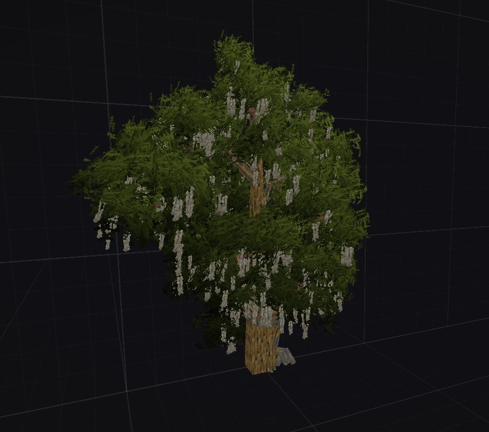
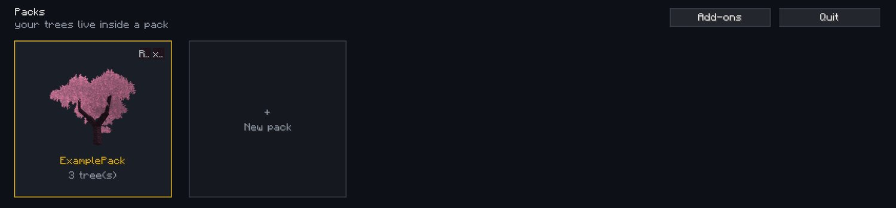
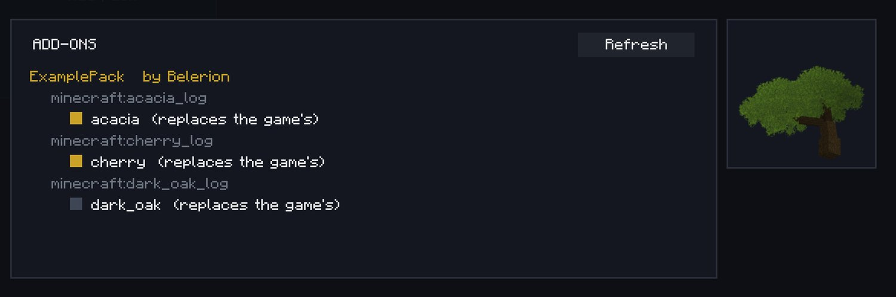
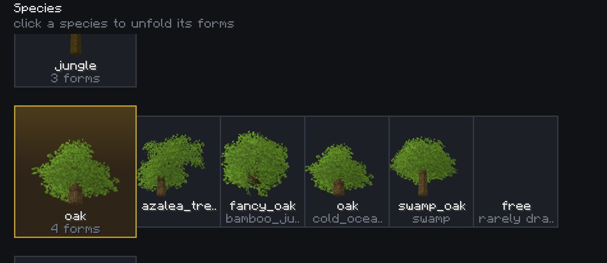
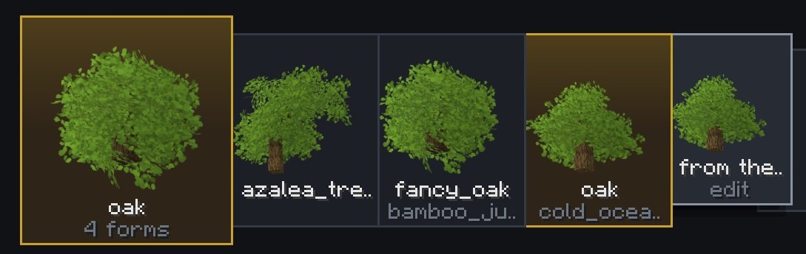
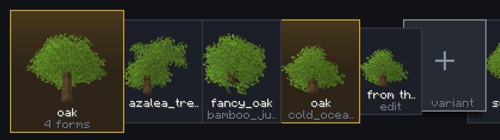
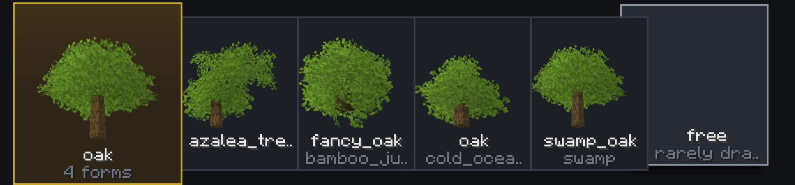
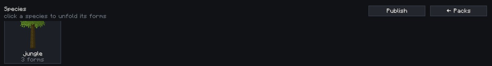
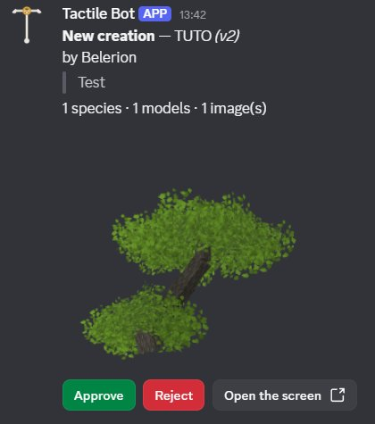
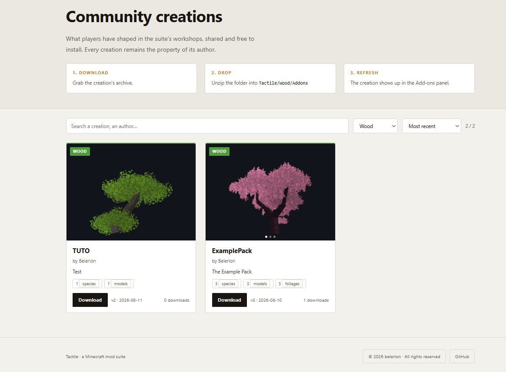

Tactile:Wood · The species workshop
Opening the workshop, creating a pack, reading the species list, publishing and receiving creations.

To open the editor, click the small T at the top right of the main menu. Turning shaders off beforehand is recommended, they can interfere with the rendering.

The editor opens a world of its own: empty, permanently lit, and you are a spectator in it. The scene is swept clean on every entry, so nothing you leave there survives. Your work lives in files next to the game, in .minecraft\Tactile\Wood.
The first time you open a pack, the editor asks for a name. That name is the one used when you publish your packs, and it is shown in the Add-ons menu of the players who use your creations.
The workshop's buttons are quoted here in English, as on the screenshots. If you play in another language, the editor shows them translated: "Solid view" and "Save the variant" will read differently on your screen.
A pack is the folder your trees live in. You always work inside a pack, and each pack is handled independently from the others.
Hovering a pack card reveals two buttons. R renames the pack. X deletes it: be careful, deleting cannot be undone, it takes the pack's trees and leaves with it, and there is no recycle bin.
Tactile:Wood ships with an automatic sharing environment, the add-ons. An add-on is another author's pack, installed on your side. It joins your game automatically and you can collect as many as you like. An add-on cannot be edited.
To install one, drop its folder into .minecraft\Tactile\Wood\Addons. The Refresh button in the menu saves you from restarting the game.
The Add-ons menu lists every tree with its author's name, shows a preview on hover, and lets you decide which ones your game will use: simply untick the ones you would rather not see. The decision stays on your side, it writes nothing into the pack you received. A pack that requires a mod you do not have is flagged and left aside.

Selecting a pack opens it in detail. Every tree species available in your game appears, including those added by other mods.
Each species has at least one sub-species, shown as "forms" in the editor and detected automatically by the game, which defines the kind of tree and also where it grows.

To create a new tree, you have three options.
The first: pick a sub-species and edit the vanilla model. This overwrites the vanilla model, it leaves the draw and your trees take its place.

The second: pick a sub-species and create a new variant. This adds one more model to the draw without overwriting vanilla, which therefore stays on equal terms with yours.

The third: create a free model. That tree ignores sub-species and can be drawn whatever the biome it stands in. Its appearance rate is 5%.

If two packs overwrite the same vanilla model, they will coexist as variants.
The species screen of your pack is where you publish it.

The list opens with everything ticked: untick what is not ready, you do not publish your working folder but a selection. The package takes the name of the open pack. A red line points out what is missing before you send, a missing credit or models still carrying their default name; it warns, it never blocks.
A description is asked for, and it is required: confirming an empty one does nothing. The editor then prepares one image per tree and sends everything.
Once published, your pack goes to an administrator for review. This keeps the showcase consistent and worth browsing.

Once approved it appears on the site and is featured on the Discord, which can take a few minutes.

You can of course share your pack by hand, without going through the site: the folder sits in .minecraft\Tactile\Wood\Export. It is written there before anything is sent, so giving up on publishing loses you nothing.
When an already published pack is published again from the same installation, it skips review and is updated directly on the site. The update is announced on the Discord too.
That recognition rests on a token stored in .minecraft\Tactile\Wood\author.json. From another installation, or for a pack that was never approved, the submission goes through review again.
The help channel is there for that, and other people's creations are often the best answer.
Join the Discord